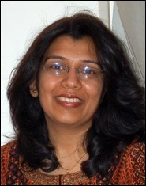
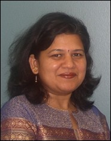

Treasure Hunt in Alaska - Information
Funding
- Treasure hunt in Alaska is an educational product funded by the Alaska Space Grant Program through grants from the national Space Grant program of the National Aeronautics and Space Administration (NASA)
Information for teachers
- Note: This story is designed to help introduce students to SAR remote sensing. The concepts are presented in a simple way to get the message across. The best sample images are also carefully selected to depict different Alaskan terrains and landscapes. In real life it would be much harder than is depicted in this story to analyze remote sensing images and find something lost in such a vast and remote location.
- Education Standards applicable for Treasure Hunt in Alaska (thanks to Gary Cooper for his help in identifying them)
All pages of website passed the validation for
- Extensible HyperText Markup Language (XHTML) (version 1.1)
- Cascading Style Sheets (CSS)
- Section 508 compliance
- Web Content Accessibility Guidelines (WCAG)
Image credits
- Seal hunting, lunch by river, and sled paintings - adapted from photographs in Alaska Geographic
- Iditarod trail map - Iditarod official site
- Alaska size comparison - Christian Nielsen
- Gold occurrence - adapted in part from Ontario MNR, Canada
- Satellites in orbit, satellites in operation - Anupma Prakash
- Moons of the solar system - NASA Solar System Exploration
- Corner reflector animation - Rudiger Gens
- Pipline route - adapted from Argonne National Laboratory
- SAR image of Colville River - Japanese Space Agency
- All other SAR images - Canadian Space Agency
- Corner reflector photograph - Wade Albright
- Glacier photograph - Rudiger Gens
- River and city photographs - Anupma Prakash
About the authors

Anupma Prakash
, Associate Professor at the Department of Geology and Geophysics - University of Alaska Fairbanks (UAF), is a geologist and a remote sensing expert. She also works at the Geophysical Institute (GI), specializing in thermal infrared remote sensing, and multisensor data fusion for Arctic studies. Dr. Prakash is the author of a related web based story Alaska: A Bird’s Eye View. More information on her research and teaching are available at www.gi.alaska.edu/~prakash.Rudiger Gens
is a Remote Sensing Scientist at the Alaska Satellite Facility, GI. He specializes in algorithm development and processing of SAR and Interferometric SAR data. His PhD research was on quality assessment of SAR interferometric data. Dr. Gens is a cooperating faculty at the Department of Geology and Geophysics, UAF. More information on his research and teaching are available at www.gi.alaska.edu/~rgens.
Aradhana Gupta
is an artist and a specialist in water color landscapes and ceramics. She took arts as her specialization in high school, followed by a five year degree program in fine arts, and an advanced Masters degree in arts. She has an international experience in teaching arts to elementary, middle and secondary school children. She can be reached at aradhanagupta27@hotmail.com.© 2006, Geophysical Institute, UAF